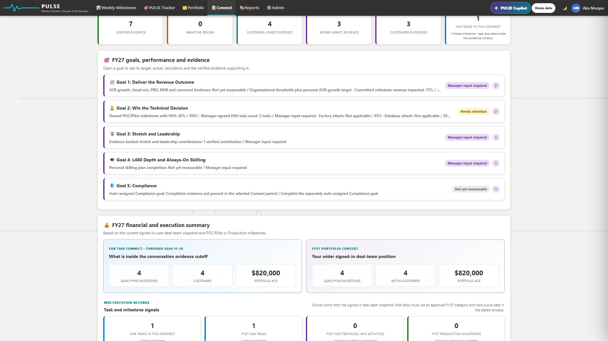

Weekly Milestones
Retrieve, review and route evidence before preparing guarded updates.
PULSE turns the signed-in user's MSX portfolio and Microsoft 365 evidence into weekly milestone updates, prioritised execution actions, opportunity workspaces and an evidence-grounded FY27 Connect.

Retrieve the evidence, understand the priorities, work in the opportunity and retain a trustworthy record.
Retrieve, review and route evidence before preparing guarded updates.
Prioritise personal actions, team decisions and evidence-backed opportunity signals.
Inspect accounts, opportunities, milestones, ownership and deal-team coverage.
Prepare the scheduled conversation from verified evidence and FY27 measures.
Reopen saved Weekly and Connect versions without regenerating history.
Ask read-only questions about risk, evidence gaps and the next best action.
Weekly begins with an exact reporting period and retrieved evidence. Each substantive item is approved, excluded or routed to Weekly / MSX, Account holding or Connect before PULSE generates milestone commentary.

Tracker separates immediate personal action, team review and broader opportunity discovery without mixing their purposes or denominators.
Highest-value open actions across ownership, HVA, attach and Technical Close.
Evidence and decisions for Scrum, forecast, pipeline and account reviews.
Evidence-backed signals for exploration without forcing premature pipeline.
Portfolio preserves parent and child account relationships and opens the detailed opportunity workspace for milestone coverage, ownership, team membership, POC/Pilot and Technical Close work.
Portfolio guide →
PULSE discovers the First or Next Connect schedule, builds the correct evidence window and keeps goals, workstreams, contribution type, financial context and MSX attribution visible before generation.


Ask what needs attention, what is blocked, why PULSE believes it and what should happen next. PULSE Copilot remains read-only and does not replace guarded workflows.
Recorded from the current Production interface at desktop resolution using fabricated customers, opportunities, evidence and commercial values.
Period selection, evidence routing and guarded update preparation.
This Week, Opportunity Review and Opportunity Radar.
Preparation context, evidence review, generation and PULSE Copilot.
No agent package, sideloading or link code. Select your work account and begin with the workflow you need.